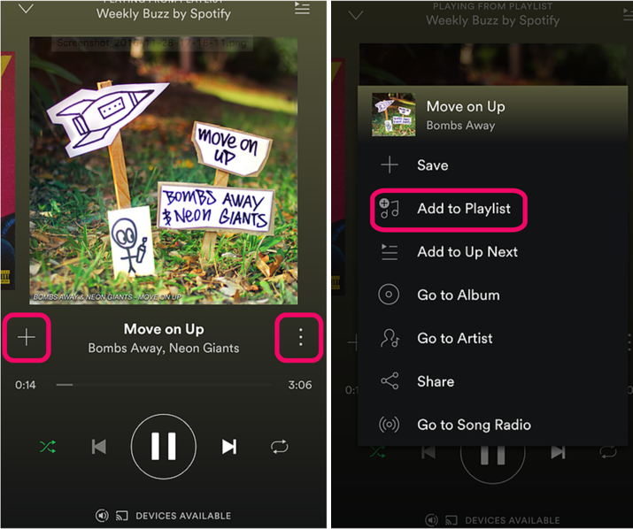
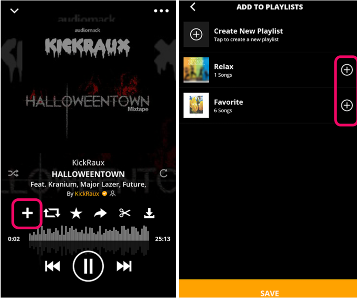
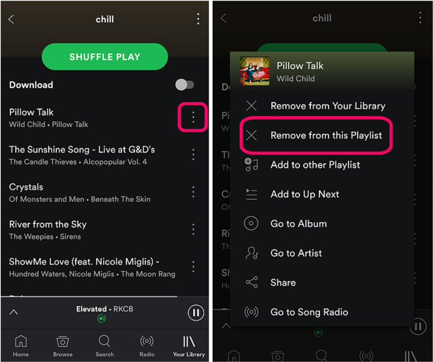
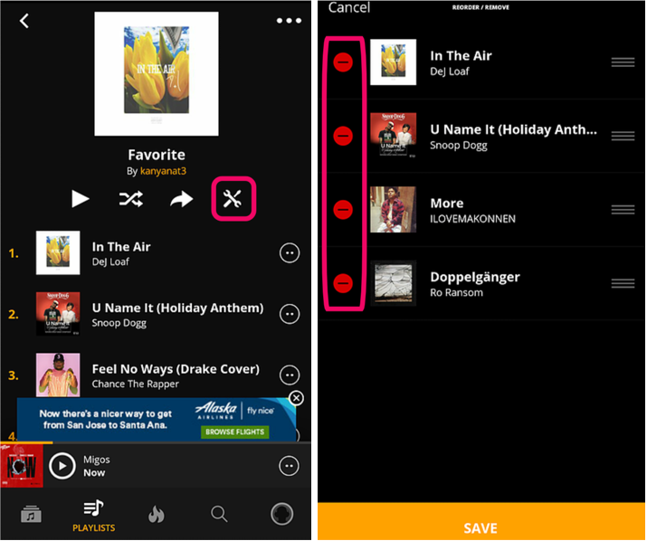
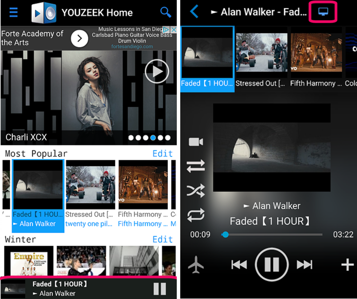
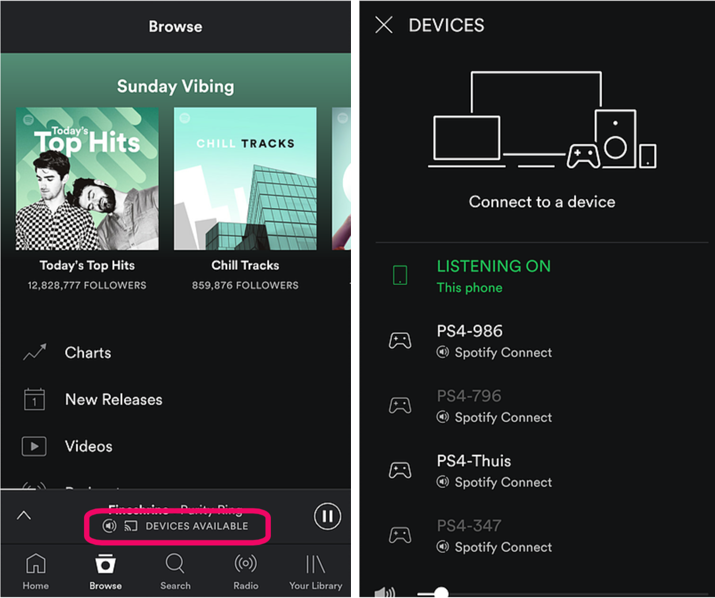
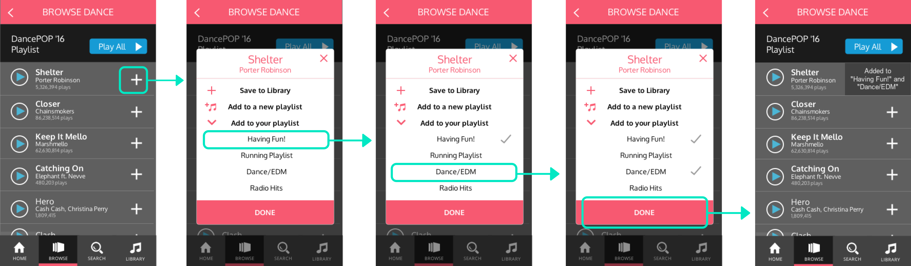
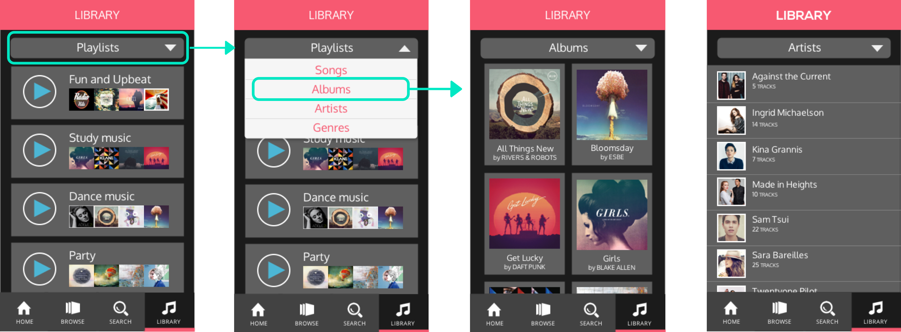
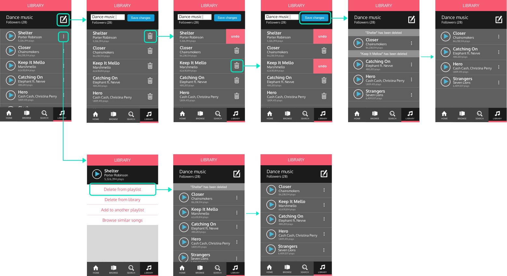

Music App Redesign
Music streaming has become widely popular, offering playlist personalization, song recommendations, and music exploration. Although creating a customized playlist is often an enjoyable experience, managing it over time is less so. We examined user's activities and interactions on music applications and found that large-scale playlist management is quite tedious and time-consuming. As a result, playlists become outdated, containing songs that repeatedly get skipped over but never get deleted. This redesign aims to provide more user control in playlist management.
UX/UI Designer
Kanyanat Tongprasearth
& Emily Tao
Nov 2016 - Dec 2016
3 weeks
In this redesign, we aim to give users more freedom to manage their playlists efficiently. A successful prototype would allow users to clean up songs in their playlists in order to enjoy a seamless music experience free from outdated or overplayed songs.
User Research | Competitive Analysis | Wire-framing | High-fidelity prototyping
I made significant contributions to all aspects of the project which involved interviewing, analyzing related applications, sketching layouts, and defining essential features. The high-fidelity prototype, created using Sketch and Invision, is my personal contribution.
See interactive prototype here!
Competitive analysis, wireframes, and high-fidelity prototype
User Interviews: 9 participants, age 20-30
Emily and I interviewed music listeners about their favorite music application, asking about playlist curation, occasions for music, and song exploration. We found that participants enjoy customizing their playlist and having access to a large library of songs. They enjoy music during work, exercise, and/or long drives. We dug deeper about playlist management and found that participants get tired of certain songs in their playlist, which may be outdated or overplayed. Yet they rarely delete songs from the playlist. Instead, they repeatedly skip the same songs as the songs get played. On further questioning, participants revealed that their music application only allows deletion of individual songs, making large-scale changes difficult and tedious.
From user research, we consolidated 2 design principles to focus on that will enhance the music listening experience. These are reference points that we can use to measure the progress and effectiveness of our design.
Freedom of control Allow flexibility in adding, moving, and deleting songs
Customization Encourage personalization and adaptation to individual preferences
We contrasted similar functionality across different mobile applications to identify the different uses of layouts, icons, navigation, options, and other functions. For this analysis, we identified user interfaces that were intuitive and facilitated user control, but also pinpointed poor elements of the interface that may cause confusion for users.
1. Adding a song to a playlist
Spotify

AudioMack 
2. Deleting songs from a playlist
Spotify

AudioMack 
3. Switching devices
Youzeek

Spotify 
On Spotify, the 3 dot icon is ambiguous and doesn't intuitively indicate the add song functionality. On Audiomack, the interface allows for adding the selected song to multiple playlists.
While Spotify only allows removing individual song, Audiomack has an edit mode where users can delete and reorganize their songs much more efficiently.
Youzeek uses unclear icons and places it high on the screen, far from other actionable buttons. On the other hand, Spotify uses a descriptive label, "Devices Available" to prompt for action.
We sketched out the rough interface ideas on paper, allowing us to communicate and discuss our ideas. Both the user research insights and the competitive analysis findings shaped this wireframe design. One main goal is to allow more user control in playlist management. The interface and functionalities enable users to efficiently add songs to multiple playlists, delete multiple songs from a playlist, and move songs from one playlist to another.
From the sketched wireframes, I created an interactive prototype with the redesigned experience of finding music, adding songs to a library, and updating playlists. In this first prototype, I focused on adding useful functionalities that addresses the user needs we have found.
Tasked with creating the final prototype, I fleshed out the interactive elements associated with specific user goals. I focused on designing an interface that clearly communicates its status and functionalities. Based on user research, it's important to allow for efficient user control, but also consider possible user errors and ways to recover from them.
USER GOAL 1: Adding to a Playlist
USER GOAL 2: Searching in the Library
USER GOAL 3: Large-scale Playlist Management
Checkout the interactive prototype here!